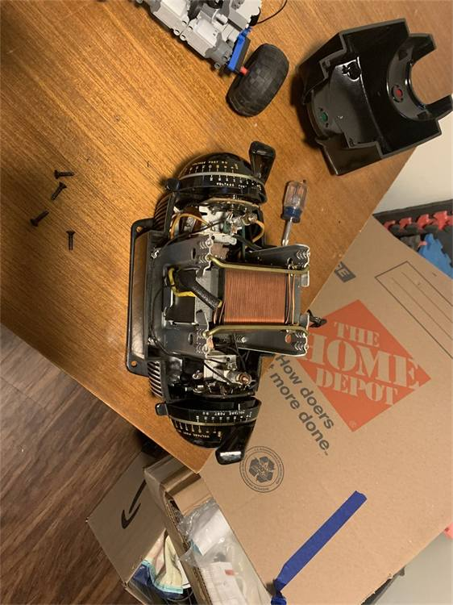

Model Train Restoration

Restored a family collection of model trains whose original rubber-insulated wiring had deteriorated.
Scope
- Rewired and refurbished approximately ten locomotives.
- Restored roughly 50 feet of track.
- Repaired and rewired the train transformer.